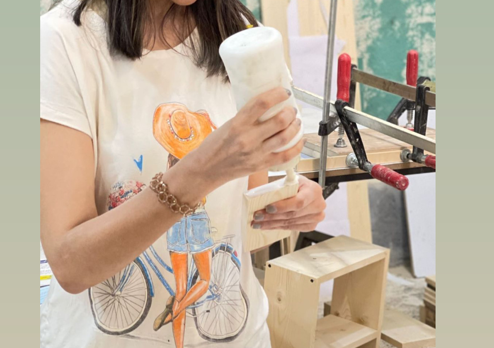

Life and my belief
Learning new thing have made me fresh in whole my life.
I think Compassion and kindness make the world a better place.
I really believe the world would be a better place if people were
more Optimistic and friendly, rather than living a life filled
with pessimism.
I live by my rules, and will probably live with fewer regrets.
I Find Ways to be stay grateful, Being thankful for the little
things & I have a health work-life balance too.

